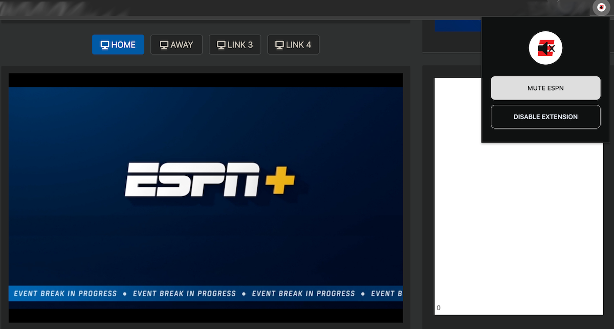
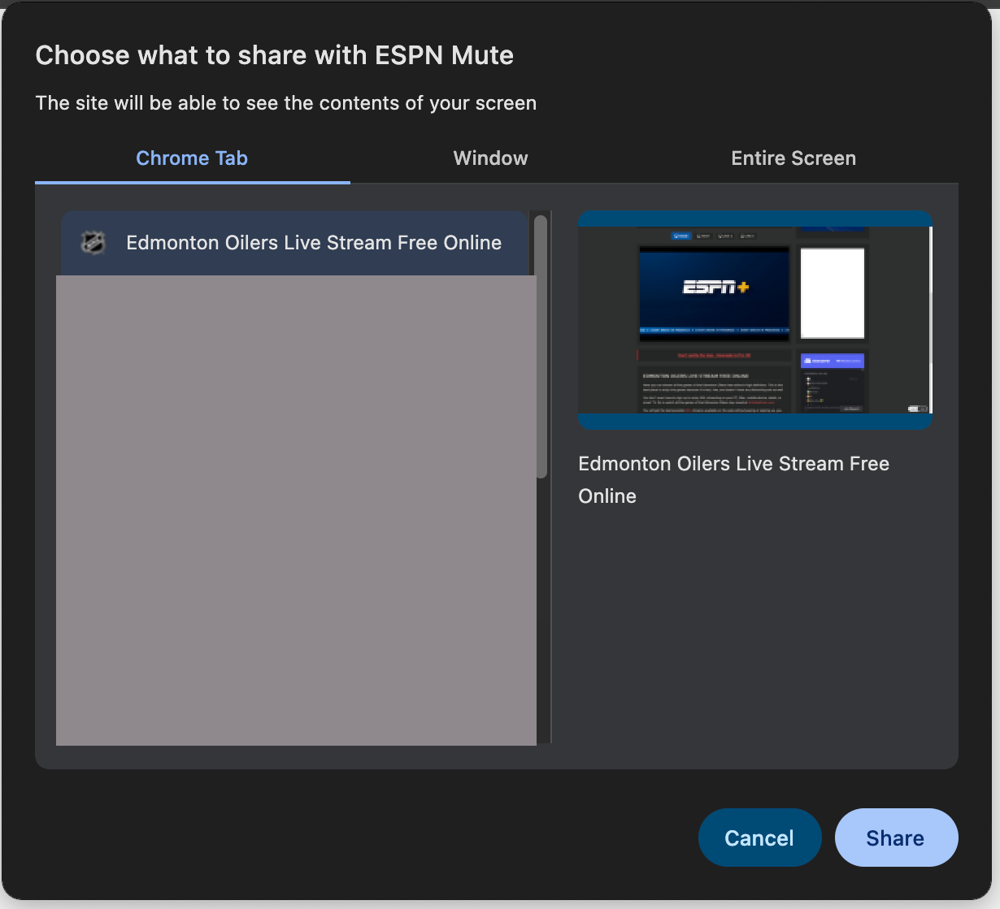
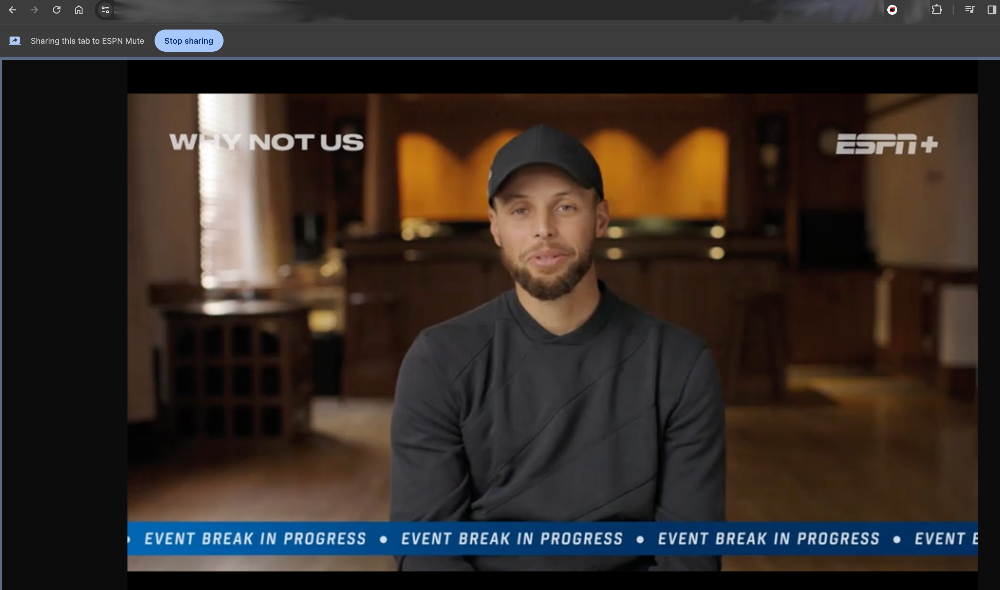

Go to the Chrome tab with the video playing, click on the ESPN Mute icon in extensions to open the menu:
Click on Mute ESPN which will bring up Chrome's screen share. Select the tab with the video and click Share:
Click on the fullscreen icon on the video to expand the size to fill the window (this is important for image matching).
Click on Disable Extension in the extension menu to stop tab sharing and perform clean-up.